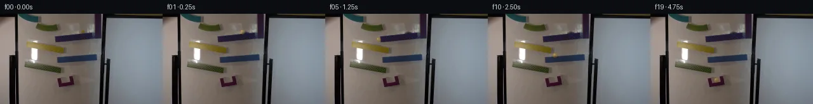

![首帧]()

Round 00
2026-11-05T03:04:32.794016+00:00像素候选变化代码 +190/−0inspection 更新
pixels c8d4dad43284681e · code b2eee979b3ab54f7
查看本轮 generate.py 真实 diff
--- previous/generate.py
+++ current/generate.py
@@ -0,0 +1,190 @@
+from pathlib import Path
+
+import cv2
+import numpy as np
+from PIL import Image, ImageDraw
+
+from artifact_io import save
+
+
+ROOT = Path(__file__).resolve().parent
+WIDTH, HEIGHT = 256, 144
+
+
+# Measured continuation positions. Frame 00 is never redrawn; these are used for
+# frames 01-19. The alternating x direction follows the four sloped ramps.
+POSITIONS = [
+ (130.0, 28.0),
+ (126.0, 29.0),
+ (116.0, 30.2),
+ (103.0, 31.8),
+ (90.0, 33.2),
+ (84.0, 41.5),
+ (82.0, 49.0),
+ (91.0, 51.1),
+ (100.0, 53.5),
+ (105.0, 61.0),
+ (106.0, 66.5),
+ (98.0, 67.5),
+ (91.0, 69.0),
+ (86.0, 76.0),
+ (87.0, 80.5),
+ (96.0, 82.5),
+ (102.0, 85.5),
+ (104.0, 93.5),
+ (104.0, 100.5),
+ (104.0, 106.0),
+]
+
+CONTACT = {
+ 1: 0.72,
+ 2: 0.85,
+ 3: 0.85,
+ 4: 0.72,
+ 6: 0.74,
+ 7: 0.88,
+ 8: 0.72,
+ 10: 0.76,
+ 11: 0.86,
+ 12: 0.72,
+ 14: 0.76,
+ 15: 0.86,
+ 16: 0.68,
+ 18: 0.38,
+ 19: 0.92,
+}
+
+
+def remove_source_marble(source: np.ndarray) -> np.ndarray:
+ """Locally reconstruct the board/ramp under the original 8 px marble."""
+ mask = np.zeros((HEIGHT, WIDTH), dtype=np.uint8)
+ # This covers the measured amber sphere without touching unrelated regions.
+ cv2.circle(mask, (130, 28), 5, 255, thickness=-1, lineType=cv2.LINE_AA)
+ # TELEA follows the diagonal purple edge through the tiny occluded area.
+ bgr = cv2.cvtColor(source, cv2.COLOR_RGB2BGR)
+ clean = cv2.inpaint(bgr, mask, 3.0, cv2.INPAINT_TELEA)
+ return cv2.cvtColor(clean, cv2.COLOR_BGR2RGB)
+
+
+def coverage_circle(px: int, py: int, cx: float, cy: float, radius: float) -> float:
+ """4x4 analytic supersampling coverage for a native-resolution pixel."""
+ offsets = (0.125, 0.375, 0.625, 0.875)
+ inside = 0
+ r2 = radius * radius
+ for oy in offsets:
+ for ox in offsets:
+ dx = px + ox - cx
+ dy = py + oy - cy
+ inside += dx * dx + dy * dy <= r2
+ return inside / 16.0
+
+
+def render_glass_marble(frame: np.ndarray, cx: float, cy: float, contact: float) -> None:
+ """Render a small, transmitted-color amber glass sphere in-place."""
+ radius = 3.65
+
+ # A restrained contact shadow is present only while supported by a ramp.
+ if contact > 0:
… diff truncated; 103 more lines …